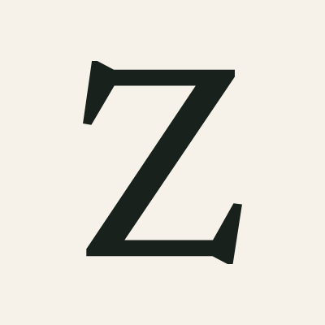
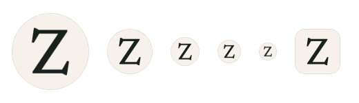
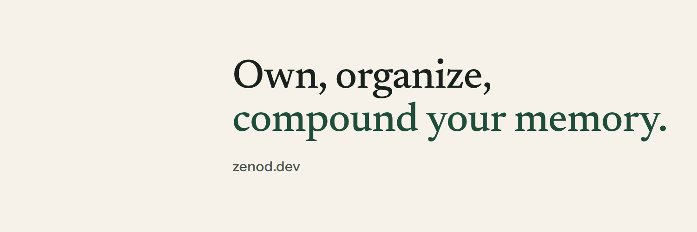
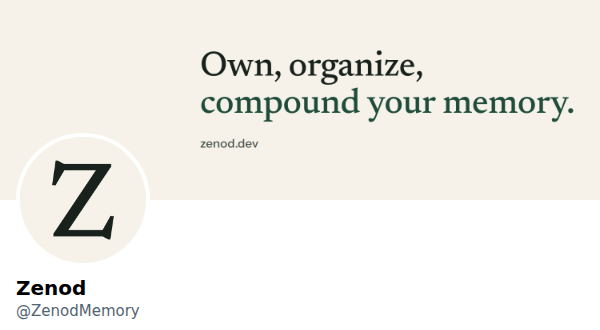
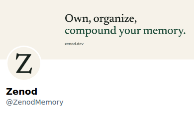
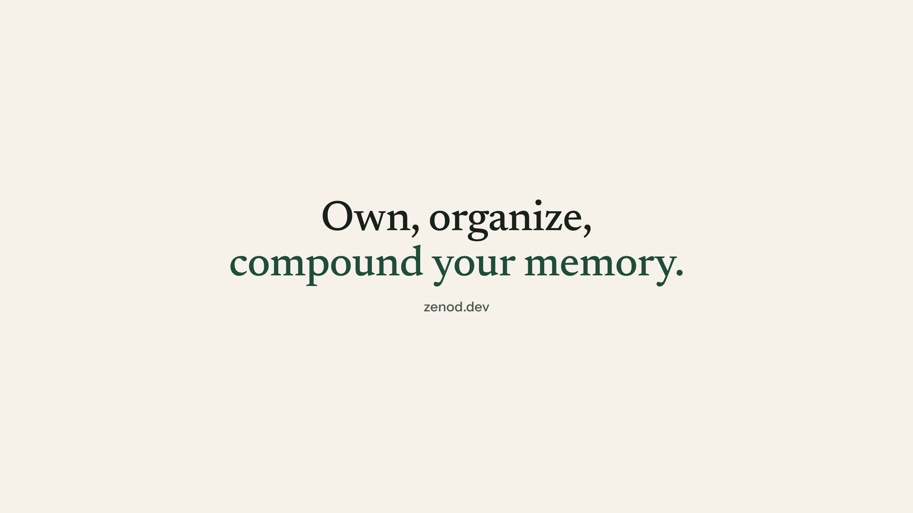
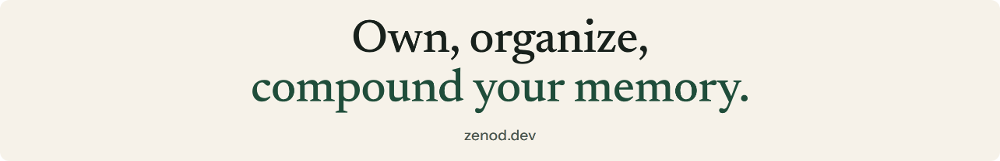
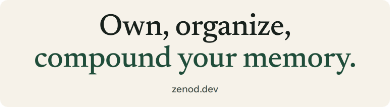
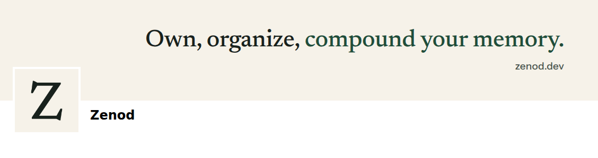

Zenod social kit
The one place for every Zenod profile picture and banner. Each file is at the exact size its platform asks for. New assets and new versions go here, nowhere else.
Own, organize, compound your memory.
Profile picture



X





YouTube








TikTok
Versions
| Version | Date | What changed |
|---|---|---|
| 3, current | 11 Nov 2026 | One kit for every profile. The earlier Newsreader Z is back. Light paper banners with the new tagline, set in the real fonts and checked at real size. |
| 2, withdrawn | 11 Nov 2026 | A heavy block Z on a dark tile and dark banners. Jordi kept the earlier Z. |
| 1 | 8 Nov 2026 | The Newsreader Z on paper, the first Zenod profile picture. |
To add an asset or a new version: change the files beside this page and render them again with the kit's render script, then add a line here. Everything stays in the zenod repository under docs/brand/social-kit.